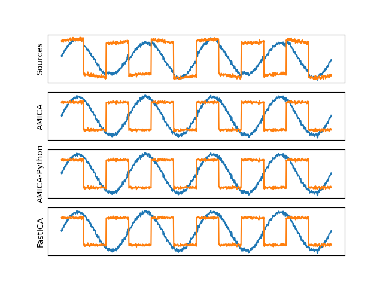

Note
Go to the end to download the full example code.
Run ICA On Toy Data¶
Generate Data and Load AMICA Results for Comparison¶
%%
data_dir = amica.datasets.data_path() / "toy_2" / "amicaout_toy_2"
Downloading data from 'https://github.com/scott-huberty/amica/releases/download/v0.6.0/test_output.tar.gz' to file '/home/circleci/amica_test_data/74cd649d03dc20d7b938945e84c7c5cd-test_output.tar.gz'.
0%| | 0.00/4.82M [00:00<?, ?B/s]
0%| | 0.00/4.82M [00:00<?, ?B/s]
100%|█████████████████████████████████████| 4.82M/4.82M [00:00<00:00, 20.4GB/s]
Untarring contents of '/home/circleci/amica_test_data/74cd649d03dc20d7b938945e84c7c5cd-test_output.tar.gz' to '/home/circleci/amica_test_data/.'
Downloading data from 'https://github.com/marcromani/cocktail/raw/refs/heads/master/examples/data/example2_baboon' to file '/home/circleci/amica_test_data/photos/example2_baboon'.
0%| | 0.00/66.1k [00:00<?, ?B/s]
0%| | 0.00/66.1k [00:00<?, ?B/s]
100%|██████████████████████████████████████| 66.1k/66.1k [00:00<00:00, 338MB/s]
Downloading data from 'https://github.com/marcromani/cocktail/raw/refs/heads/master/examples/data/example2_cameraman' to file '/home/circleci/amica_test_data/photos/example2_cameraman'.
0%| | 0.00/37.6k [00:00<?, ?B/s]
0%| | 0.00/37.6k [00:00<?, ?B/s]
100%|██████████████████████████████████████| 37.6k/37.6k [00:00<00:00, 167MB/s]
Downloading data from 'https://github.com/marcromani/cocktail/raw/refs/heads/master/examples/data/example2_lena' to file '/home/circleci/amica_test_data/photos/example2_lena'.
0%| | 0.00/67.4k [00:00<?, ?B/s]
0%| | 0.00/67.4k [00:00<?, ?B/s]
100%|██████████████████████████████████████| 67.4k/67.4k [00:00<00:00, 369MB/s]
Downloading data from 'https://github.com/marcromani/cocktail/raw/refs/heads/master/examples/data/example2_mona' to file '/home/circleci/amica_test_data/photos/example2_mona'.
0%| | 0.00/33.6k [00:00<?, ?B/s]
0%| | 0.00/33.6k [00:00<?, ?B/s]
100%|██████████████████████████████████████| 33.6k/33.6k [00:00<00:00, 190MB/s]
Downloading data from 'https://github.com/marcromani/cocktail/raw/refs/heads/master/examples/data/example2_texture' to file '/home/circleci/amica_test_data/photos/example2_texture'.
0%| | 0.00/17.9k [00:00<?, ?B/s]
0%| | 0.00/17.9k [00:00<?, ?B/s]
100%|██████████████████████████████████████| 17.9k/17.9k [00:00<00:00, 104MB/s]
x = amica.utils.generate_toy_data(n_samples=10_000, noise_factor=.05, seed=42)
Run AMICA and FastICA for comparison¶
fi = FastICA()
z = fi.fit_transform(x)
INFO | Getting the covariance matrix ... - amica.linalg:pre_whiten
INFO | doing eigenvalue decomposition for 2 features ... - amica.linalg:pre_whiten
INFO | minimum eigenvalues: [0.37647124] - amica.linalg:pre_whiten
INFO | maximum eigenvalues: [0.8583412 0.37647124] - amica.linalg:pre_whiten
INFO | num eigvals kept: 2 - amica.linalg:pre_whiten
INFO | numeigs = 2, nw = 2 - amica.linalg:pre_whiten
INFO | 1: block size = 10000 - amica.core:solve
INFO | Solving. (please be patient, this may take a while)... - amica.core:solve
INFO | Iteration 1, lrate = 0.05000, LL = -1.2404086, nd = 0.3271082, D = 0.00000 0.00000 took 0.05 seconds - amica.core:optimize
INFO | Iteration 2, lrate = 0.05000, LL = -0.9388079, nd = 0.4452878, D = 0.00028 0.00028 took 0.01 seconds - amica.core:optimize
INFO | Iteration 3, lrate = 0.05000, LL = -0.3732032, nd = 1.4492905, D = 0.00283 0.00283 took 0.06 seconds - amica.core:optimize
INFO | Iteration 4, lrate = 0.05000, LL = -0.7599340, nd = 9.0485077, D = 0.02049 0.02049 took 0.01 seconds - amica.core:optimize
WARNING | Likelihood decreasing! - amica.core:optimize
INFO | Iteration 5, lrate = 0.05000, LL = -4.3733390, nd = 7.4506971, D = 0.09379 0.09379 took 0.03 seconds - amica.core:optimize
WARNING | Likelihood decreasing! - amica.core:optimize
INFO | Iteration 6, lrate = 0.05000, LL = -1.3599251, nd = 1.0459140, D = 0.00300 0.00300 took 0.07 seconds - amica.core:optimize
INFO | Iteration 7, lrate = 0.05000, LL = -0.8593365, nd = 1.2508692, D = 0.00338 0.00338 took 0.01 seconds - amica.core:optimize
INFO | Iteration 8, lrate = 0.05000, LL = -0.3891906, nd = 0.7114393, D = 0.02153 0.02153 took 0.03 seconds - amica.core:optimize
INFO | Iteration 9, lrate = 0.05000, LL = -0.2046074, nd = 4.1126799, D = 0.01819 0.01819 took 0.07 seconds - amica.core:optimize
INFO | Iteration 10, lrate = 0.05000, LL = -4.0326292, nd = 6.1754284, D = 0.04891 0.04891 took 0.03 seconds - amica.core:optimize
WARNING | Likelihood decreasing! - amica.core:optimize
INFO | Iteration 11, lrate = 0.02500, LL = -1.1276689, nd = 0.7439036, D = 0.12458 0.12458 took 0.07 seconds - amica.core:optimize
INFO | Iteration 12, lrate = 0.02500, LL = -1.0260615, nd = 0.9633519, D = 0.10518 0.10518 took 0.01 seconds - amica.core:optimize
INFO | Iteration 13, lrate = 0.02500, LL = -0.9109503, nd = 1.2744467, D = 0.08356 0.08356 took 0.03 seconds - amica.core:optimize
INFO | Iteration 14, lrate = 0.02500, LL = -0.7315055, nd = 1.7270107, D = 0.05955 0.05955 took 0.07 seconds - amica.core:optimize
INFO | Iteration 15, lrate = 0.02500, LL = -0.4263988, nd = 2.0082507, D = 0.03453 0.03453 took 0.01 seconds - amica.core:optimize
INFO | Iteration 16, lrate = 0.02500, LL = -0.2173679, nd = 3.3522061, D = 0.01634 0.01634 took 0.03 seconds - amica.core:optimize
INFO | Iteration 17, lrate = 0.02500, LL = -0.5526286, nd = 6.0230422, D = 0.04672 0.04672 took 0.07 seconds - amica.core:optimize
WARNING | Likelihood decreasing! - amica.core:optimize
INFO | Iteration 18, lrate = 0.02500, LL = -1.0115462, nd = 5.5457736, D = 0.00426 0.00426 took 0.01 seconds - amica.core:optimize
WARNING | Likelihood decreasing! - amica.core:optimize
INFO | Iteration 19, lrate = 0.02500, LL = -0.4702086, nd = 2.7871749, D = 0.02269 0.02269 took 0.02 seconds - amica.core:optimize
INFO | Iteration 20, lrate = 0.02500, LL = -0.4032770, nd = 4.5496672, D = 0.02543 0.02543 took 0.07 seconds - amica.core:optimize
INFO | Iteration 21, lrate = 0.02500, LL = -0.7054692, nd = 5.1914900, D = 0.02677 0.02677 took 0.03 seconds - amica.core:optimize
WARNING | Likelihood decreasing! - amica.core:optimize
INFO | Iteration 22, lrate = 0.01250, LL = -0.4009035, nd = 3.2364552, D = 0.02677 0.02677 took 0.07 seconds - amica.core:optimize
INFO | Iteration 23, lrate = 0.01250, LL = -0.1726074, nd = 1.2343866, D = 0.02681 0.02681 took 0.01 seconds - amica.core:optimize
INFO | Iteration 24, lrate = 0.01250, LL = -0.0402335, nd = 2.5780157, D = 0.02663 0.02663 took 0.03 seconds - amica.core:optimize
INFO | Iteration 25, lrate = 0.01250, LL = -0.1651454, nd = 6.9933307, D = 0.02715 0.02715 took 0.07 seconds - amica.core:optimize
WARNING | Likelihood decreasing! - amica.core:optimize
INFO | Iteration 26, lrate = 0.01250, LL = -1.3716620, nd = 13.7138901, D = 0.02604 0.02604 took 0.01 seconds - amica.core:optimize
WARNING | Likelihood decreasing! - amica.core:optimize
INFO | Iteration 27, lrate = 0.01250, LL = -1.1587468, nd = 3.4725535, D = 0.02684 0.02684 took 0.03 seconds - amica.core:optimize
INFO | Iteration 28, lrate = 0.01250, LL = -0.5182845, nd = 1.6253481, D = 0.02686 0.02686 took 0.07 seconds - amica.core:optimize
INFO | Iteration 29, lrate = 0.01250, LL = -0.2394078, nd = 0.7867928, D = 0.02688 0.02688 took 0.03 seconds - amica.core:optimize
INFO | Iteration 30, lrate = 0.01250, LL = -0.0433468, nd = 0.4896005, D = 0.02716 0.02716 took 0.07 seconds - amica.core:optimize
INFO | Iteration 31, lrate = 0.01250, LL = 0.0063763, nd = 1.6161154, D = 0.02681 0.02681 took 0.01 seconds - amica.core:optimize
INFO | Iteration 32, lrate = 0.01250, LL = -0.0730655, nd = 5.6916597, D = 0.02768 0.02768 took 0.03 seconds - amica.core:optimize
WARNING | Likelihood decreasing! - amica.core:optimize
INFO | Iteration 33, lrate = 0.00625, LL = -0.1999970, nd = 7.9804371, D = 0.02641 0.02641 took 0.07 seconds - amica.core:optimize
WARNING | Likelihood decreasing! - amica.core:optimize
INFO | Iteration 34, lrate = 0.00625, LL = -0.2575798, nd = 6.6715216, D = 0.02735 0.02735 took 0.03 seconds - amica.core:optimize
WARNING | Likelihood decreasing! - amica.core:optimize
INFO | Iteration 35, lrate = 0.00625, LL = -0.1230242, nd = 4.3541294, D = 0.02708 0.02708 took 0.07 seconds - amica.core:optimize
INFO | Iteration 36, lrate = 0.00625, LL = -0.0384232, nd = 2.7922551, D = 0.02706 0.02706 took 0.01 seconds - amica.core:optimize
INFO | Iteration 37, lrate = 0.00625, LL = -0.0186729, nd = 3.5710418, D = 0.02696 0.02696 took 0.03 seconds - amica.core:optimize
INFO | Iteration 38, lrate = 0.00625, LL = -0.0584977, nd = 5.0921639, D = 0.02727 0.02727 took 0.07 seconds - amica.core:optimize
WARNING | Likelihood decreasing! - amica.core:optimize
INFO | Iteration 39, lrate = 0.00313, LL = 0.0015521, nd = 2.4321885, D = 0.02706 0.02706 took 0.01 seconds - amica.core:optimize
INFO | Iteration 40, lrate = 0.00313, LL = 0.0209521, nd = 1.1415178, D = 0.02710 0.02710 took 0.03 seconds - amica.core:optimize
INFO | Iteration 41, lrate = 0.00313, LL = 0.0247779, nd = 0.7532354, D = 0.02707 0.02707 took 0.07 seconds - amica.core:optimize
INFO | Iteration 42, lrate = 0.00313, LL = 0.0258859, nd = 0.5421704, D = 0.02707 0.02707 took 0.03 seconds - amica.core:optimize
INFO | Iteration 43, lrate = 0.00313, LL = 0.0266330, nd = 0.4075471, D = 0.02708 0.02708 took 0.07 seconds - amica.core:optimize
INFO | Iteration 44, lrate = 0.00313, LL = 0.0271922, nd = 0.2982358, D = 0.02707 0.02707 took 0.01 seconds - amica.core:optimize
INFO | Iteration 45, lrate = 0.00313, LL = 0.0276435, nd = 0.2428121, D = 0.02708 0.02708 took 0.01 seconds - amica.core:optimize
INFO | Iteration 46, lrate = 0.00313, LL = 0.0280358, nd = 0.1920352, D = 0.02708 0.02708 took 0.02 seconds - amica.core:optimize
INFO | Iteration 47, lrate = 0.00313, LL = 0.0283938, nd = 0.1655871, D = 0.02708 0.02708 took 0.07 seconds - amica.core:optimize
INFO | Iteration 48, lrate = 0.00313, LL = 0.0287219, nd = 0.1329138, D = 0.02708 0.02708 took 0.03 seconds - amica.core:optimize
INFO | Iteration 49, lrate = 0.00313, LL = 0.0290245, nd = 0.1222402, D = 0.02708 0.02708 took 0.07 seconds - amica.core:optimize
INFO | Iteration 50, lrate = 0.00313, LL = 0.0293051, nd = 0.0002436, D = 0.02708 0.02708 took 0.01 seconds - amica.core:optimize
INFO | Starting Newton ... setting numdecs to 0 - amica.core:optimize
INFO | Iteration 51, lrate = 0.00625, LL = 0.0295875, nd = 0.0000968, D = 0.02708 0.02708 took 0.03 seconds - amica.core:optimize
INFO | Iteration 52, lrate = 0.01250, LL = 0.0298291, nd = 0.0000667, D = 0.02708 0.02708 took 0.07 seconds - amica.core:optimize
INFO | Iteration 53, lrate = 0.02500, LL = 0.0300506, nd = 0.0000636, D = 0.02708 0.02708 took 0.03 seconds - amica.core:optimize
INFO | Iteration 54, lrate = 0.05000, LL = 0.0302550, nd = 0.0000602, D = 0.02708 0.02708 took 0.07 seconds - amica.core:optimize
INFO | Iteration 55, lrate = 0.10000, LL = 0.0304432, nd = 0.0000545, D = 0.02708 0.02708 took 0.03 seconds - amica.core:optimize
INFO | Iteration 56, lrate = 0.20000, LL = 0.0306154, nd = 0.0000463, D = 0.02708 0.02708 took 0.07 seconds - amica.core:optimize
INFO | Iteration 57, lrate = 0.30000, LL = 0.0307723, nd = 0.0000385, D = 0.02709 0.02709 took 0.03 seconds - amica.core:optimize
INFO | Iteration 58, lrate = 0.40000, LL = 0.0309143, nd = 0.0000313, D = 0.02709 0.02709 took 0.07 seconds - amica.core:optimize
INFO | Iteration 59, lrate = 0.50000, LL = 0.0310420, nd = 0.0000252, D = 0.02709 0.02709 took 0.01 seconds - amica.core:optimize
INFO | Iteration 60, lrate = 0.60000, LL = 0.0311561, nd = 0.0000203, D = 0.02709 0.02709 took 0.01 seconds - amica.core:optimize
INFO | Iteration 61, lrate = 0.70000, LL = 0.0312573, nd = 0.0000166, D = 0.02710 0.02710 took 0.07 seconds - amica.core:optimize
INFO | Iteration 62, lrate = 0.80000, LL = 0.0313463, nd = 0.0000138, D = 0.02710 0.02710 took 0.03 seconds - amica.core:optimize
INFO | Iteration 63, lrate = 0.90000, LL = 0.0314240, nd = 0.0000118, D = 0.02710 0.02710 took 0.07 seconds - amica.core:optimize
INFO | Iteration 64, lrate = 1.00000, LL = 0.0314911, nd = 0.0000101, D = 0.02710 0.02710 took 0.03 seconds - amica.core:optimize
INFO | Iteration 65, lrate = 1.00000, LL = 0.0315486, nd = 0.0000096, D = 0.02710 0.02710 took 0.07 seconds - amica.core:optimize
INFO | Iteration 66, lrate = 1.00000, LL = 0.0315973, nd = 0.0000084, D = 0.02710 0.02710 took 0.03 seconds - amica.core:optimize
INFO | Iteration 67, lrate = 1.00000, LL = 0.0316382, nd = 0.0000079, D = 0.02710 0.02710 took 0.07 seconds - amica.core:optimize
INFO | Iteration 68, lrate = 1.00000, LL = 0.0316721, nd = 0.0000070, D = 0.02710 0.02710 took 0.01 seconds - amica.core:optimize
INFO | Iteration 69, lrate = 1.00000, LL = 0.0316999, nd = 0.0000065, D = 0.02710 0.02710 took 0.02 seconds - amica.core:optimize
INFO | Iteration 70, lrate = 1.00000, LL = 0.0317226, nd = 0.0000057, D = 0.02709 0.02709 took 0.07 seconds - amica.core:optimize
INFO | Iteration 71, lrate = 1.00000, LL = 0.0317407, nd = 0.0000053, D = 0.02709 0.02709 took 0.03 seconds - amica.core:optimize
INFO | Iteration 72, lrate = 1.00000, LL = 0.0317552, nd = 0.0000046, D = 0.02709 0.02709 took 0.07 seconds - amica.core:optimize
INFO | Iteration 73, lrate = 1.00000, LL = 0.0317648, nd = 0.0000035, D = 0.02709 0.02709 took 0.03 seconds - amica.core:optimize
INFO | Iteration 74, lrate = 1.00000, LL = 0.0317706, nd = 0.0000034, D = 0.02709 0.02709 took 0.07 seconds - amica.core:optimize
INFO | Iteration 75, lrate = 1.00000, LL = 0.0317752, nd = 0.0000028, D = 0.02709 0.02709 took 0.03 seconds - amica.core:optimize
INFO | Iteration 76, lrate = 1.00000, LL = 0.0317786, nd = 0.0000026, D = 0.02709 0.02709 took 0.07 seconds - amica.core:optimize
INFO | Iteration 77, lrate = 1.00000, LL = 0.0317794, nd = 0.0000025, D = 0.02709 0.02709 took 0.03 seconds - amica.core:optimize
INFO | Iteration 78, lrate = 1.00000, LL = 0.0317797, nd = 0.0000023, D = 0.02709 0.02709 took 0.07 seconds - amica.core:optimize
INFO | Iteration 79, lrate = 1.00000, LL = 0.0317799, nd = 0.0000022, D = 0.02709 0.02709 took 0.01 seconds - amica.core:optimize
INFO | Iteration 80, lrate = 1.00000, LL = 0.0317802, nd = 0.0000020, D = 0.02709 0.02709 took 0.03 seconds - amica.core:optimize
INFO | Iteration 81, lrate = 1.00000, LL = 0.0317804, nd = 0.0000019, D = 0.02709 0.02709 took 0.07 seconds - amica.core:optimize
INFO | Iteration 82, lrate = 1.00000, LL = 0.0317807, nd = 0.0000017, D = 0.02709 0.02709 took 0.03 seconds - amica.core:optimize
INFO | Iteration 83, lrate = 1.00000, LL = 0.0317809, nd = 0.0000018, D = 0.02709 0.02709 took 0.07 seconds - amica.core:optimize
INFO | Iteration 84, lrate = 1.00000, LL = 0.0317811, nd = 0.0000016, D = 0.02709 0.02709 took 0.09 seconds - amica.core:optimize
INFO | Iteration 85, lrate = 1.00000, LL = 0.0317814, nd = 0.0000017, D = 0.02709 0.02709 took 0.01 seconds - amica.core:optimize
INFO | Iteration 86, lrate = 1.00000, LL = 0.0317817, nd = 0.0000014, D = 0.02709 0.02709 took 0.03 seconds - amica.core:optimize
INFO | Iteration 87, lrate = 1.00000, LL = 0.0317819, nd = 0.0000016, D = 0.02709 0.02709 took 0.07 seconds - amica.core:optimize
INFO | Iteration 88, lrate = 1.00000, LL = 0.0317822, nd = 0.0000013, D = 0.02709 0.02709 took 0.03 seconds - amica.core:optimize
INFO | Iteration 89, lrate = 1.00000, LL = 0.0317825, nd = 0.0000016, D = 0.02709 0.02709 took 0.07 seconds - amica.core:optimize
INFO | Iteration 90, lrate = 1.00000, LL = 0.0317828, nd = 0.0000013, D = 0.02709 0.02709 took 0.03 seconds - amica.core:optimize
INFO | Iteration 91, lrate = 1.00000, LL = 0.0317831, nd = 0.0000015, D = 0.02709 0.02709 took 0.07 seconds - amica.core:optimize
INFO | Iteration 92, lrate = 1.00000, LL = 0.0317834, nd = 0.0000012, D = 0.02709 0.02709 took 0.03 seconds - amica.core:optimize
INFO | Iteration 93, lrate = 1.00000, LL = 0.0317837, nd = 0.0000015, D = 0.02709 0.02709 took 0.07 seconds - amica.core:optimize
INFO | Iteration 94, lrate = 1.00000, LL = 0.0317840, nd = 0.0000012, D = 0.02709 0.02709 took 0.03 seconds - amica.core:optimize
INFO | Iteration 95, lrate = 1.00000, LL = 0.0317844, nd = 0.0000015, D = 0.02709 0.02709 took 0.07 seconds - amica.core:optimize
INFO | Iteration 96, lrate = 1.00000, LL = 0.0317847, nd = 0.0000011, D = 0.02709 0.02709 took 0.01 seconds - amica.core:optimize
INFO | Iteration 97, lrate = 1.00000, LL = 0.0317851, nd = 0.0000015, D = 0.02709 0.02709 took 0.09 seconds - amica.core:optimize
INFO | Iteration 98, lrate = 1.00000, LL = 0.0317855, nd = 0.0000011, D = 0.02709 0.02709 took 0.01 seconds - amica.core:optimize
INFO | Iteration 99, lrate = 1.00000, LL = 0.0317859, nd = 0.0000015, D = 0.02709 0.02709 took 0.03 seconds - amica.core:optimize
INFO | Iteration 100, lrate = 1.00000, LL = 0.0317863, nd = 0.0000011, D = 0.02709 0.02709 took 0.07 seconds - amica.core:optimize
INFO | Iteration 101, lrate = 1.00000, LL = 0.0317867, nd = 0.0000006, D = 0.02709 0.02709 took 0.03 seconds - amica.core:optimize
INFO | Iteration 102, lrate = 1.00000, LL = 0.0317872, nd = 0.0000006, D = 0.02709 0.02709 took 0.07 seconds - amica.core:optimize
INFO | Iteration 103, lrate = 1.00000, LL = 0.0317876, nd = 0.0000006, D = 0.02709 0.02709 took 0.03 seconds - amica.core:optimize
INFO | Iteration 104, lrate = 1.00000, LL = 0.0317881, nd = 0.0000006, D = 0.02709 0.02709 took 0.07 seconds - amica.core:optimize
INFO | Iteration 105, lrate = 1.00000, LL = 0.0317886, nd = 0.0000006, D = 0.02709 0.02709 took 0.03 seconds - amica.core:optimize
INFO | Iteration 106, lrate = 1.00000, LL = 0.0317891, nd = 0.0000006, D = 0.02709 0.02709 took 0.07 seconds - amica.core:optimize
INFO | Iteration 107, lrate = 1.00000, LL = 0.0317896, nd = 0.0000000, D = 0.02709 0.02709 took 0.03 seconds - amica.core:optimize
INFO | Exiting because norm of weight gradient less than 0.000000100000 - amica.core:optimize
INFO | Finished in 4.45 seconds - amica.core:optimize
apply the learned unmixing matrix to the data
Plot Results¶

Total running time of the script: (0 minutes 14.197 seconds)